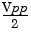
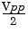

DC Offset Voltage
The default offset is 0 volts for all functions.
· Limits Due to Amplitude: The relationship between offset voltage and output amplitude is shown below. Vmax is the maximum peak voltage for the selected output termination (5 volts for a 50W load or 10 volts for a high-impedance load).
|Voffset| < Vmax - 
If the specified offset voltage is not valid, the function generator will automatically adjust it to the maximum dc voltage allowed with the amplitude specified.
|Voffset| < Vmax - 
If the specified offset voltage is not valid, the function generator will automatically adjust it to the maximum dc voltage allowed with the amplitude specified.
· Limits Due to Output Termination: The offset limits are determined by the current output termination setting. For example, if you set the offset to 100 mVdc and then change the output termination from 50 ohms to "high impedance", the offset voltage displayed on the function generator's front-panel will double to 200 mVdc (and no error will be generated). If you change from "high impedance" to 50 ohms, the displayed offset will drop in half. See "Output Termination" on page 57 for more information.
· Arbitrary Waveform Limitations: For arbitrary waveforms, the maximum offset and amplitude will be limited if the waveform data points do not span the full range of the output DAC (Digital-to-Analog Converter). For example, the built-in "Sinc" waveform does not use the full range of values between ±1 and therefore its maximum offset is limited to 4.95 volts (into 50 ohms).
· You can also set the offset by specifying a high level and low level. For example, if you set the high level to +2 volts and the low level to
-3 volts, the resulting amplitude is 5 Vpp (with an offset voltage of
-500 mV).
-3 volts, the resulting amplitude is 5 Vpp (with an offset voltage of
-500 mV).
· For dc volts, the output level is actually controlled by setting the offset voltage. You can set the dc level to any value between ±5 Vdc into 50 ohms or ±10 Vdc into an open circuit.
To select dc volts from the front panel, press and then select the DC On softkey. Press the Offset softkey to set the desired offset voltage level.
and then select the DC On softkey. Press the Offset softkey to set the desired offset voltage level.
To select dc volts from the front panel, press
· Front-Panel Operation: To set the dc offset, press the Offset softkey for the selected function. Then use the knob or numeric keypad to enter the desired offset. To set the offset using a high level and low level, press the Offset softkey again to toggle to the HiLevel and LoLevel softkeys.
· Remote Interface Operation:
VOLTage:OFFSet {<offset>|MINimum|MAXimum}
Or, you can set the offset by specifying a high level and low level using the following commands.
VOLTage:HIGH {<voltage>|MINimum|MAXimum}
VOLTage:LOW {<voltage>|MINimum|MAXimum}
You can also use the APPLy command to select the function, frequency, amplitude, and offset with a single command.
VOLTage:OFFSet {<offset>|MINimum|MAXimum}
Or, you can set the offset by specifying a high level and low level using the following commands.
VOLTage:HIGH {<voltage>|MINimum|MAXimum}
VOLTage:LOW {<voltage>|MINimum|MAXimum}
You can also use the APPLy command to select the function, frequency, amplitude, and offset with a single command.